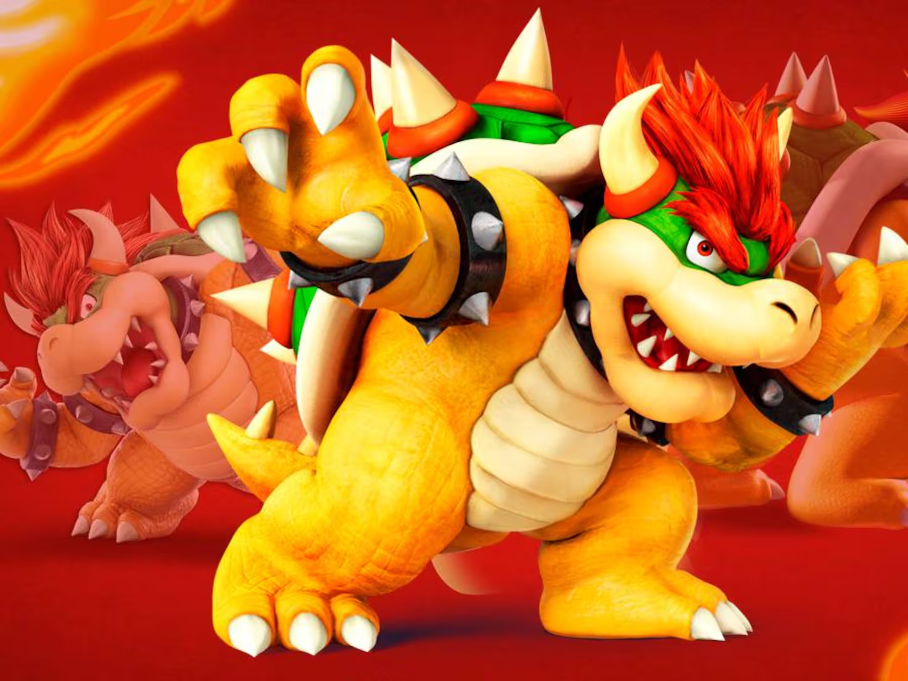
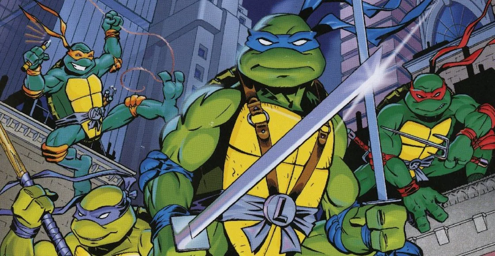

Bowswe
El famoso villano de la franquicia de juegos de Super Mario.
Es el rey de todos los Koopas, tambien tortugas, algunas con alas.

Blastoise
Debutando en los primeros juegos de Pokémon, es la forma final de uno los pokémon con los que empiecas to aventura
Usas sus inonicos cañones de los hombros para lanzar potentes chorros de agua

Tortugas Ninja
Es casi imposible hablar de tortugas sin las tortugas Ninja, populare desde los años 80
Empezaron en un comic y han tenido diferentes versiones en todos los tipos de media